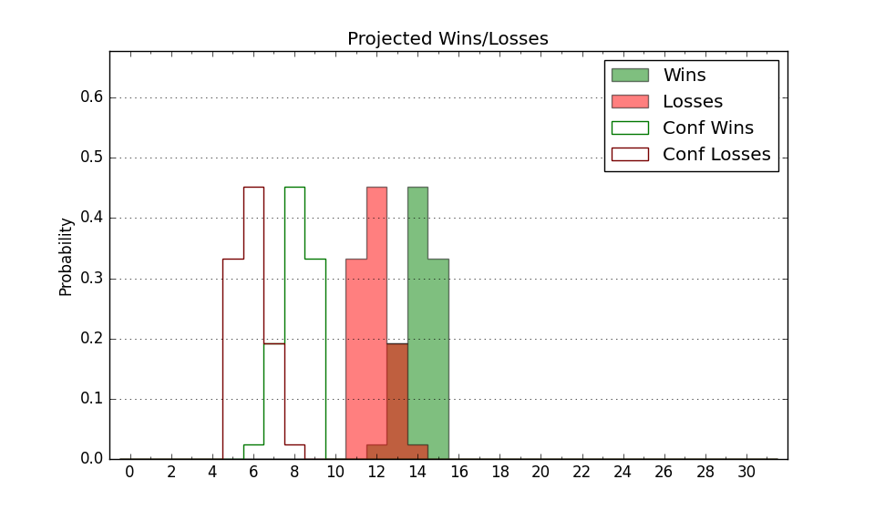

| Home | Game Probabilities | Conferences | Preseason Predictions | Odds Charts | NCAA Tournament |
| City: | Philadelphia, Pennsylvania | |
| Conference: | Ivy League (3rd)
| |
| Record: | 6-5 (Conf) 12-11 (Overall) | |
| Ratings: | Comp.: 0.6 (158th) Net: 0.8 (155th) Off: 108.3 (176th) Def: 107.5 (141st) SoR: 0.0 (99th) |
| Remaining | ||||||
|---|---|---|---|---|---|---|
| Date | Opponent | Win Prob | Pred. | |||
| 2/27 | Dartmouth (247) | 81.5% | W 82-71 | |||
| 2/28 | Harvard (152) | 64.1% | W 71-67 | |||
| 3/6 | @ Brown (286) | 63.5% | W 71-67 | |||
| Previous | Game Score | |||||
| Date | Opponent | Win Prob | Result | Off | Def | Net |
| 11/9 | @American (266) | 59.6% | L 78-84 | -6.6 | -2.4 | -9.0 |
| 11/11 | @Providence (67) | 12.7% | L 81-106 | -5.5 | -11.9 | -17.4 |
| 11/17 | Saint Joseph's (155) | 64.7% | W 83-74 | 0.7 | 1.6 | 2.3 |
| 11/21 | @Drexel (220) | 48.8% | W 84-68 | 24.7 | 5.1 | 29.8 |
| 11/28 | Merrimack (206) | 74.1% | W 77-65 | 5.4 | 5.7 | 11.1 |
| 11/29 | La Salle (243) | 80.8% | W 73-71 | 11.4 | -3.9 | 7.5 |
| 11/30 | Hofstra (92) | 43.1% | L 60-77 | -16.7 | -7.0 | -23.7 |
| 12/6 | @Villanova (38) | 6.5% | L 63-90 | 0.4 | -13.8 | -13.5 |
| 12/8 | Lafayette (326) | 91.7% | W 74-72 | -14.1 | -5.5 | -19.6 |
| 12/20 | @Rutgers (145) | 33.5% | L 69-70 | -1.9 | 8.3 | 6.5 |
| 12/28 | @George Mason (118) | 24.8% | L 79-83 | 12.8 | -9.7 | 3.1 |
| 12/31 | NJIT (320) | 91.2% | W 80-61 | 0.3 | 6.2 | 6.5 |
| 1/5 | @Princeton (255) | 57.9% | L 76-78 | 7.3 | -12.2 | -4.9 |
| 1/10 | Brown (286) | 85.6% | W 81-73 | 11.1 | -16.3 | -5.2 |
| 1/17 | @Dartmouth (247) | 56.4% | W 84-74 | 15.8 | 7.7 | 23.5 |
| 1/19 | @Harvard (152) | 34.4% | L 63-64 | -2.3 | 5.6 | 3.3 |
| 1/24 | Yale (76) | 37.1% | L 60-77 | -20.3 | 3.2 | -17.1 |
| 1/30 | @Columbia (186) | 39.6% | L 67-72 | -4.5 | 4.2 | -0.4 |
| 1/31 | @Cornell (162) | 36.0% | W 91-81 | 11.4 | 5.4 | 16.8 |
| 2/7 | Princeton (255) | 82.4% | W 61-60 | -9.3 | -3.8 | -13.1 |
| 2/13 | Columbia (186) | 69.0% | W 76-67 | -3.8 | 8.3 | 4.5 |
| 2/14 | Cornell (162) | 65.7% | W 82-76 | -13.0 | 11.9 | -1.1 |
| 2/21 | @Yale (76) | 14.7% | L 70-74 | 1.0 | 13.7 | 14.6 |
| Stats & Trends | |||||
|---|---|---|---|---|---|
| Current | Day | Week | Month | Season | |
| Composite | 0.6 | +0.0 | +0.6 | +2.3 | +9.9 |
| Comp Rank | 158 | -1 | +3 | +26 | +88 |
| Net Efficiency | 0.8 | +0.0 | +0.5 | +1.8 | -- |
| Net Rank | 155 | -- | +3 | +23 | -- |
| Off Efficiency | 108.3 | -0.0 | -0.1 | -0.4 | -- |
| Off Rank | 176 | -2 | -3 | -6 | -- |
| Def Efficiency | 107.5 | +0.1 | +0.6 | +2.2 | -- |
| Def Rank | 141 | +2 | +15 | +52 | -- |
| SoS Rank | 172 | -1 | +17 | +33 | -- |
| Exp. Wins | 14.1 | +0.0 | -0.1 | +1.4 | +4.1 |
| Exp. Conf Wins | 8.1 | +0.0 | -0.1 | +1.4 | +2.8 |
| Conf Champ Prob | 0.1 | -0.0 | -3.2 | -1.0 | -3.1 |

| Advanced Stats | ||
|---|---|---|
| Stat | Value | Rank |
| Off Eff FG % | 0.506 | 200 |
| Off Ast Ratio | 0.147 | 179 |
| Off ORB% | 0.302 | 180 |
| Off TO Rate | 0.147 | 188 |
| Off FT Ratio | 0.384 | 110 |
| Def Eff FG % | 0.518 | 193 |
| Def Ast Ratio | 0.148 | 191 |
| Def ORB% | 0.307 | 197 |
| Def TO Rate | 0.139 | 234 |
| Def FT Ratio | 0.287 | 36 |